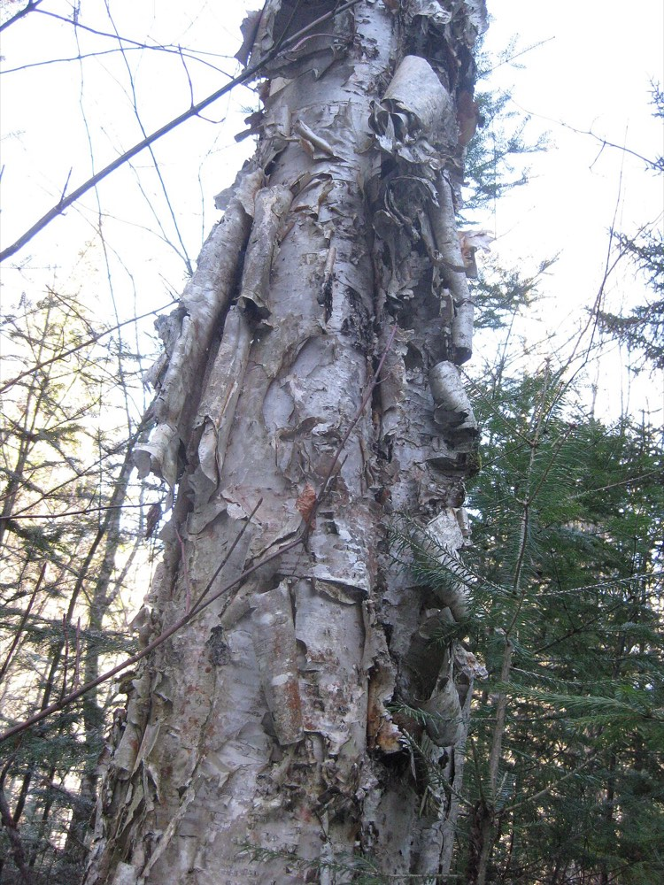
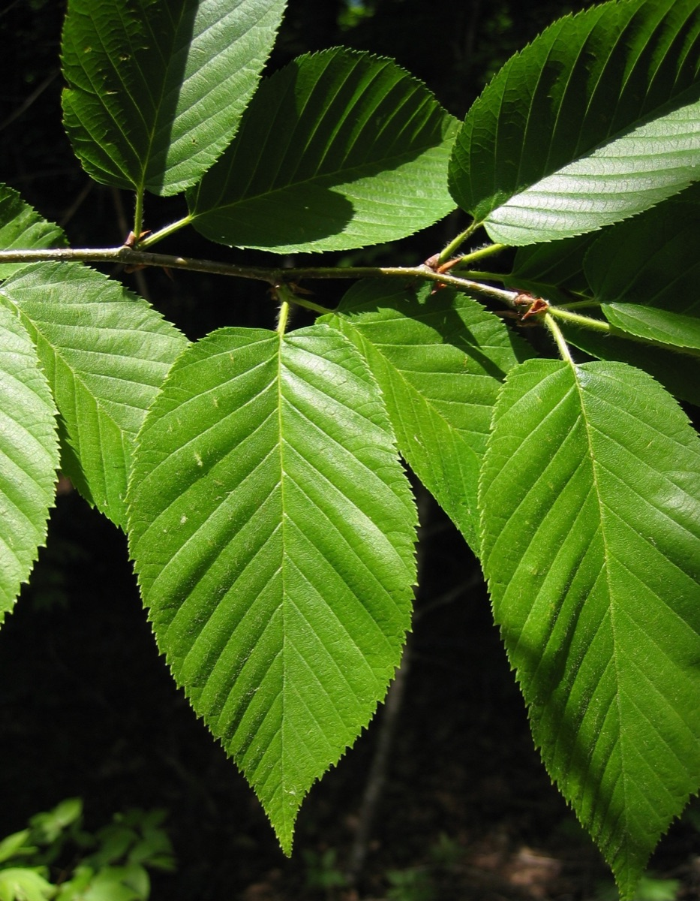

Yellow Birch
Betula alleghaniensis
nativeplant


- Kind
- tree · Betulaceae
- Native to Vermont
- yes
- Legal status
- Native, important northern hardwood; no special legal status found (checked 2026-10-30)
- Look-alikes
- Sweet (black) birch; Paper birch; Hornbeam; American hophornbeam
Names
Yellow birch, Betula alleghaniensis.
Range and habitat
Native. A medium-sized tree up to 75 feet with an irregular crown. Common in northern hardwood forest (seedling guide).
How to identify (by season; look-alikes and the key difference)
- Leaves: alternate, simple, pointed oval with a rounded base, 4 to 6 inches long, doubly toothed, dark green above and paler, somewhat soft or fuzzy below.
- Bark: young stems shiny bronze (sometimes gray), peeling in thin, curly, papery strips; older trees red-brown with scaly plates.
- Scratch-and-sniff: a broken twig smells of wintergreen. Sweet (black) birch does too, so the smell narrows it to those two.
- Look-alikes: sweet birch, paper birch, hornbeam and hophornbeam.
By growth stage (trees: seedling, sapling, pole-size, mature or old; what to look at in each)
| Stage | What to look at | What you see |
|---|---|---|
| Small seedling | cotyledons, first leaves | Birch family: small round cotyledons; simple, alternate leaves with jagged teeth. Birch seedlings are very hard to name to species; scratch a patch of twig and smell for wintergreen, and note what grows nearby. |
| Larger seedling | twig smell, leaf teeth | Doubly toothed alternate leaves; wintergreen smell from the scratched twig (also in black birch). |
| Sapling and pole-size | bark, twig | Shiny bronze bark peeling in thin curls; slender green-brown twigs that are hairy when young and become smooth light brown; spur shoots appear on older growth. |
| Mature and old trees | bark | Red-brown, scaly plates. |
| Winter, any age | twig, bud | Wintergreen smell; egg-shaped, sharply pointed reddish-brown buds with fringed scale margins. |
| Fruit (fall) | cone-like cluster | Matures in fall and disperses over winter. |
Through the year
Dates are typical for Vermont and shift with elevation and year; "approximate" means the source gave a season and the dates are a translation of it.
| When | What | Look for | What to do | Dates |
|---|---|---|---|---|
| Apr 20 to May 25 | catkins (identify) | Reddish-green male catkins about 1 inch long near the twig ends and smaller upright female catkins appear in spring on the same tree. | approximate | |
| Sep 15 to Nov 30 | seed-drop (identify) | Cone-like clusters 3/4 to 1 1/4 inches long of hairy scales, each holding a two-winged nutlet, maturing in fall and shedding over winter. | approximate | |
| Nov 1 to Mar 31 | dormant (identify) | Twigs smell of wintergreen when broken; reddish-brown, sharply pointed buds with fringed scale edges; bronze, peeling bark on young stems. | stated |
Role in the forest (what it eats, what eats it, what it needs)
See Moose, White-tailed Deer and Snowshoe Hare for browse.
What helps it thrive (light, soil, shelter, food and the trees it uses)
- Light: intermediate in shade tolerance (FEIS).
- Soil and water: best growth on well-drained fertile loams and moderately well-drained sandy loams; moist, well-drained uplands and mountain ravines; often abundant (though growing poorly) where drainage is restricted. Uncommon above 3,000 feet in the Adirondacks.
- Seedbed, the key need: seeds germinate best on moist mineral soil enriched with humus, and often on mossy logs, decayed wood and cracks in boulders; bare mineral soil and duff alone are unsuitable and seedlings on plain litter are unlikely to survive. Disturbed microsites and canopy gaps suit seedling establishment.
- Cutting: clearcutting small patches or strips, and group selection, suit it; under single-tree selection it usually declines to less than 20 percent of the stocking.
- Browse: heavy or repeated browsing by deer and moose kills small yellow birch. It grows with beech, maples (especially sugar maple), ashes, aspens, white pine, red spruce and balsam fir.
Legal status
No special status found.
Sources
- Virginia Tech Dendrology, Yellow birch: https://dendro.cnre.vt.edu/dendrology/syllabus/factsheet.cfm?ID=12
- J. Robertson and J. Truong, A Guide to the Seedlings of New England (FEMC, 2021): https://www.uvm.edu/femc/attachments/project/999/seedling_guide-compressed_1.pdf
- USDA Forest Service, Fire Effects Information System, Betula alleghaniensis: https://www.fs.usda.gov/database/feis/plants/tree/betall/all.html
Vermont Woodland Owner's Reference, built 2026-11-11. Rules and dates here are summaries, not legal advice; dates shift with elevation and year. Photo and recording credits · The text is by Loop Works, CC BY 4.0 (pictures and recordings keep their own licenses)